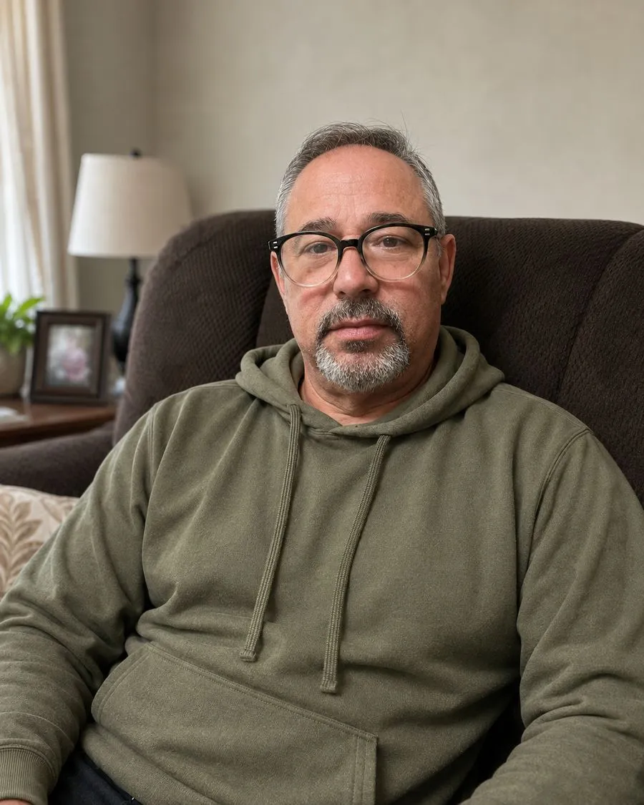
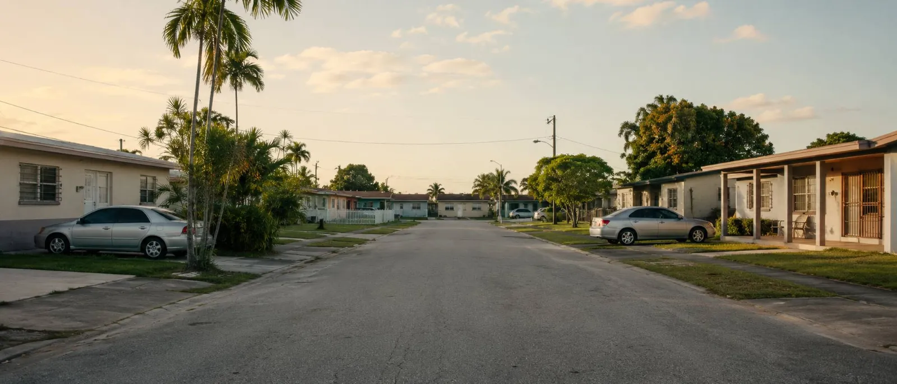

Sobre mí
Una vida de reinvención, servicio y verdad.
Nací en La Habana y crecí en San Francisco de Paula, municipio de San Miguel del Padrón. Llegué a Estados Unidos con 51 años, en diciembre de 2022, y comencé una nueva vida en Hialeah.

Emitida el 17 de agosto de 2026.
Cómo deseo trabajar
Escuchar antes de explicar. Quiero comenzar cada conversación escuchando. Antes de hablar de opciones, necesito comprender qué preocupa a la persona, qué desea proteger y qué información le falta. Si una respuesta debe verificarse en un documento oficial, lo diría claramente. Mi responsabilidad sería ayudar a comprender, no decidir por la persona.
Sin presión ni promesas. Una familia debe poder hacer preguntas, revisar la información y tomarse el tiempo necesario. Nunca prometería aprobación, elegibilidad, disponibilidad de cobertura ni un resultado específico.
El interés de la familia primero. Comprendo que una futura comisión puede crear un conflicto de interés. Por eso explicaría con transparencia cómo soy compensado. Si una opción no correspondiera con la situación de la persona, se lo diría con sinceridad, aunque eso significara no realizar una venta.
Mis raíces
Crecí en una familia monoparental con muy pocos recursos materiales, pero con valores suficientes para orientar toda una vida. Mis abuelos fueron fundamentales en mi formación. Sus enseñanzas me ayudaron a comprender que el valor de una persona no depende de lo que posee, sino de la clase de ser humano que decide ser y de cómo trata a quienes la rodean.
Ese origen me enseñó a apreciar la familia, la responsabilidad y la importancia de contribuir positivamente a la sociedad. No recuerdo mi infancia solo por lo que nos faltaba, sino también por los principios que recibí.
Comenzar nuevamente a los 51 años
Cuando llegué a Estados Unidos tuve que enfrentar uno de los mayores cambios de mi vida. Venía con el oficio de zapatero, pero encontré muy pocas oportunidades para ejercerlo de la misma manera. También tenía limitaciones físicas y la responsabilidad de continuar proveyendo para mi familia.
No podía quedarme detenido pensando únicamente en lo que sabía hacer antes. Tuve que reinventarme, aprender y aceptar que comenzar de cero también podía convertirse en una oportunidad para descubrir nuevas capacidades.
Hialeah se convirtió en mi hogar porque aquí estaba la familia que me abrió las puertas de su casa y me ayudó a encaminar esta nueva etapa. Como cubano e inmigrante, comprendo el dolor, la incertidumbre y los desafíos de quienes han tenido que dejar atrás lo conocido. No todas las historias migratorias son iguales, pero sé lo que significa tener que reconstruir la propia vida.
Una trayectoria formada por distintas responsabilidades
En Cuba trabajé como zapatero y como administrador integral de tiendas del Comercio Interior. En Estados Unidos obtuve la licencia de oficial de seguridad Clase D y he trabajado en esa actividad durante buena parte de mi nueva etapa. Esas responsabilidades me enseñaron a organizar, observar, escuchar, resolver dificultades y tratar con respeto a personas con experiencias muy diferentes.
Paralelamente, me reinventé como creador de contenido digital bajo el nombre artístico William TEC. He desarrollado el proyecto infantil Walter Aprende Jugando y, según mi registro de producción, he creado más de 172 producciones musicales distribuidas en plataformas digitales. También soy autor de Contador de Historias de una vida real, una obra publicada que explora la migración, la familia, la fe y la búsqueda de identidad.
Por qué elegí prepararme en seguros
Mi hijo y un amigo vieron en mí cualidades que podían ser útiles en esta profesión y me animaron a estudiar para la licencia 2-15. Al conocer mejor este campo, me atrajo que se rige por leyes y principios y que se relaciona con la protección de las personas y sus familias cuando enfrentan situaciones de vulnerabilidad.
Durante mi preparación comprendí que el futuro siempre será incierto, pero que existen recursos que pueden ayudar a una familia a prepararse y aliviar algunas consecuencias económicas de los acontecimientos inesperados. También entendí que orientar sobre seguros implica una gran responsabilidad: no consiste simplemente en presentar un producto, exige escuchar, identificar necesidades, explicar limitaciones y reconocer todo lo que todavía debe verificarse.
Cuando la protección se volvió personal
Viví de cerca la pérdida de un familiar cuya familia no estaba preparada para afrontar los gastos finales. Ver las dificultades que aquella situación produjo me permitió comprender que la falta de preparación puede aumentar la carga de un momento ya doloroso.
También he vivido de cerca una emergencia de salud inesperada dentro de mi propia familia. Esa experiencia me hizo pensar seriamente en las consecuencias emocionales y económicas que un momento así puede tener para todos.
Estas experiencias no me hicieron pensar que un seguro puede evitar el dolor. Me enseñaron que prepararse responsablemente puede ayudar a impedir que una situación difícil se convierta además en una crisis económica.
Servir en español y en inglés
Atender en dos idiomas significa mucho más que traducir palabras. Primero preguntaría en qué idioma se siente más cómoda la persona, adaptaría la explicación a su nivel de familiaridad y le pediría que me explicara con sus propias palabras lo que entendió. Nunca quisiera que alguien aceptara algo que no comprende completamente.
Un compromiso de aprendizaje continuo
Después de recibir mi licencia, deseo continuar estudiando las leyes de Florida, las normas de cumplimiento y únicamente los productos que esté autorizado a presentar. Obtener una licencia no representa el final del aprendizaje: representa el comienzo de una responsabilidad profesional que exige preparación, límites claros y actualización continua.
William Pérez-Mederos no es una compañía de seguros ni está afiliado con Medicare, CMS, HealthCare.gov o ninguna entidad gubernamental. Posee la licencia Florida 2-15 n.º G369134, emitida el 17 de agosto de 2026. Todavía no cuenta con nombramientos de aseguradoras, por lo que aún no puede solicitar, negociar ni vender seguros. Esta página ofrece información general; no constituye cotización, oferta, solicitud, recomendación, asesoramiento legal o fiscal ni promesa de cobertura.

Aquí también empezamos de cero, y aquí también aprendimos a cuidarnos.
Hialeah, Florida